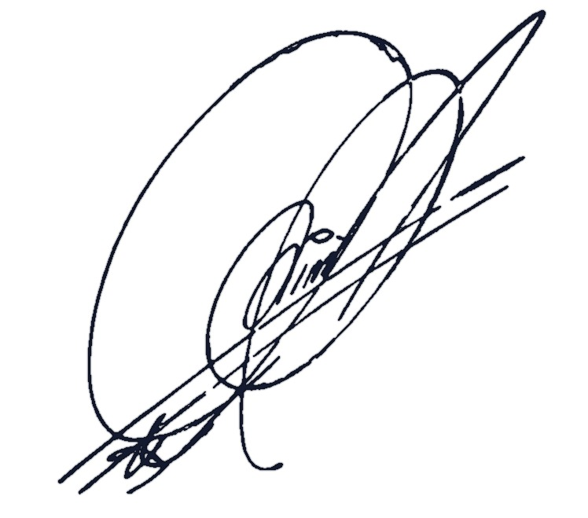

1) Datos del Paciente
2) Tipo de Receta
Usa el campo kg para calcular dosis.
Cirugía y Traumatología Bucomaxilofacial
Fecha:
RECETA
Paciente:
RUN:
Edad:
Peso:
Diagnóstico/Procedimiento:
📝 Rp/
by
SOS
+56 9 220 62 775

Dr. Javier Espina Videla
Cirugía y Traumatología Bucomaxilofacial
Universidad de Chile